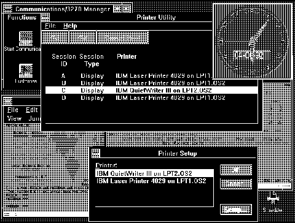

Personal Communications/3270 for Windows running under OS/2 V2.0
We apologize for the picture quality. The original
was not available. In
this picture it is using the Token-Ring LAN gateway and running as a "seamless"
WIN-OS/2 application on the Workplace Shell desktop.
[Back: VMB from an OS/2 V2.0 Program]
[Next: Memory Map of Extended Memory (HMA, UMA, and EMBs)]